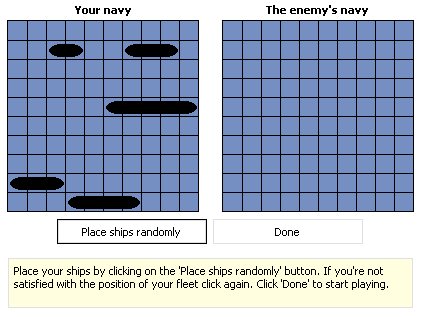
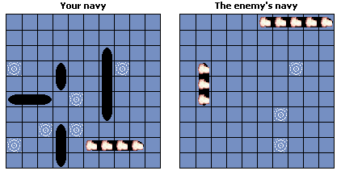

Before I start this guide, I just thought I would say that this game also goes under the name of Battle Ships.
Well, let us start with giving the general idea of the game.
The idea is to (well, win obviously) blow up all of your enemy's ships before they blow up all of yours.
The start


You are allowed one guess each turn, taking it in turn to guess where the ships are located. Once you get a hit, guess around that square (not diagonal) to try and blow up the whole ship.
Below is a guide to what each ship is named and how many of each ship there are, the smallest being two, and the largest being five.
| Name | Number of squares | Amount of ships |
| Destroyer | 2 | 1 |
| Submarine | 3 | 2 |
| Battleship | 4 | 1 |
| Aircraft Carrier | 5 | 1 |
When the game has finished it will read 'Game over! Congratulations, you have won!' if you won, or 'Game over! Too bad, you have lost.' if you lost.
I hope this guide has made it easier for you to understand the game. Of course, another thing to help you get good at any game is to PRACTISE.
This guide has been brought to you by: bno
I would also like to thank everyone who has made this game possible with MSN. THANKYOU